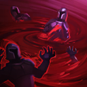

起手裝備
 增幅典籍
增幅典籍
雷霆風暴先成形，寶珠帽子放大爆發，虛空與星界保持穿透和移速；不買魔力裝。


五件成裝與鞋子分開列示；起手與核心是購買路線，不是額外佔用的成裝欄位。鞋子完成時機仍依對線壓力與回城金錢調整。


相位衝擊保留三次獨立命中條件，傳說疾速與卓越支援Q/E循環；E蓄力本身不算一次命中。


閃現疾跑維持短手法師入場及撤離；先判斷是否有強化Q窗口。
加點優先：Q > E > W
主Q、副E、W最後，Q強化窗口與血量支出決定換血，而非一冷卻就全交。
額外生命會轉換成魔攻，魔攻也會增加額外生命，形成輸出與生存互相成長。｜7.2d：額外生命轉魔攻提高至 5%，魔攻轉生命提高至 150%。
吸取目標生命造成傷害並治療自己；累積後的強化版本傷害與回復更高。｜7.2d：腥紅脈搏額外傷害加成提高至 85%。
化為血池進入無法被選取狀態，緩速並傷害上方敵人，是最重要的保命技能。
消耗生命蓄力後對周圍敵人造成範圍傷害，蓄力越完整威脅越高。｜7.2d：最低傷害提高至 30/50/70/90＋35% 魔攻＋3% 最大生命。

感染範圍內敵人並提高其承受傷害，延遲爆發後造成傷害並治療弗拉迪米爾。
保留前輪已修正相位三次命中連招，血池與E會消耗生命；沒有把血池當解除所有控制。
強化1技 → 普攻命中同一目標 → 蓄力3技 → 釋放3技 → 觸發相位後拉開
先用強化一技取得傷害與回復，在安全距離補一次普攻，再蓄力並釋放三技。須在4秒內以一技、普攻與三技命中同一名敵方英雄，且相位衝擊已冷卻完成，才會取得加速；蓄力動作本身不算命中，未觸發時不要假設有額外跑速。
4技感染 → 蓄力3技 → 2技血池 → 釋放3技 → 1技
大絕先掛上增傷，蓄力三技時進入血池躲控制並接近後排，現身後補一技等待大絕治療結算。
蓄力3技 → 閃現進場 → 4技多人感染 → 釋放3技 → 1技 → 2技撤離
先蓄力再閃現可突然覆蓋後排，大絕盡量命中多人；一輪傷害完成後用血池退出集火區。
用一技補兵與回血，強化一技盡量命中英雄，但不要為了追擊走進敵方完整連段。血池與三技都會消耗生命，低血量時要降低使用頻率。
雷霆風暴 → 無限寶珠 → 死亡之帽為預設前三件。雷霆風暴先成形，寶珠帽子放大爆發，虛空與星界保持穿透和移速；不買魔力裝。
等待敵方站位集中後進場，先以大絕提高後續傷害，再蓄力三技與血池躲開控制。完成第一輪後利用治療結算拉開，等待下一套技能二次進場。
以中路分頁的威脅為主，重點為奧莉安娜、卡薩丁、赫威；移除同時列於有利與不利的衝突，對局為機制建議而非勝率排序。
對局名單是機制與分路判斷，不代表固定勝率；需同時看雙方熟練度、兵線與陣容。
雷霆風暴先成形，寶珠帽子放大爆發，虛空與星界保持穿透和移速；不買魔力裝。
同時注意本人與球的位置，避免站在球附近讓QW和R一起命中。
大絕前可透過兵線施壓；取得R後與隊友保持距離配合，不追入無視野區。
離開QE燃燒區，EE與EQ交出後再找切入；避免同時吃兩個不同主題觸發被動。
依本頁目前五件成裝與鞋線替換；同一格多個建議擇一。先看實際傷害和控制，再決定是否犧牲輸出或保命。
高
觸發：敵方魔防成形時優先百分比穿透；已帶虛空就保留，不因坦克多重複買第二件。
目前配置已包含對應工具；先確認是否能有效使用，不需重複購買。
鞋子更換時需連同三級升級路線一起更換；五件成裝不含鞋，主動裝仍占成裝格。
高
觸發：敵方一輪爆發使你無法完成輸出時，改中婭並保留使用時機；若已配中婭就先調整站位與啟動時間。
星河馳騁 → 中婭沙漏
敵方一輪爆發使你無法完成輸出時，改中婭並保留使用時機；若已配中婭就先調整站位與啟動時間。
敵方一輪爆發使你無法完成輸出時，改中婭並保留使用時機；若已配中婭就先調整站位與啟動時間。
鞋子更換時需連同三級升級路線一起更換；五件成裝不含鞋，主動裝仍占成裝格。
高
觸發：敵方單次關鍵技能先手決定生死時改女妖；護盾被遠程消耗後先退，女妖不是主動解控。
星河馳騁 → 女妖面紗
敵方單次關鍵技能先手決定生死時改女妖；護盾被遠程消耗後先退，女妖不是主動解控。
敵方單次關鍵技能先手決定生死時改女妖；護盾被遠程消耗後先退，女妖不是主動解控。
鞋子更換時需連同三級升級路線一起更換；五件成裝不含鞋，主動裝仍占成裝格。
高
觸發：回復妨礙擊殺且隊友無法穩定重創時，先遺忘寶珠過渡再改黑魔禁書；不要為小額治療過早打散核心。
星河馳騁 → 黑魔禁書
回復妨礙擊殺且隊友無法穩定重創時，先遺忘寶珠過渡再改黑魔禁書；不要為小額治療過早打散核心。
回復妨礙擊殺且隊友無法穩定重創時，先遺忘寶珠過渡再改黑魔禁書；不要為小額治療過早打散核心。
鞋子更換時需連同三級升級路線一起更換；五件成裝不含鞋，主動裝仍占成裝格。
高
觸發：護盾持續擋住主要傷害時改海洋之戟；這是破盾功能，不能替代重創。
星河馳騁 → 水仙三叉戟
護盾持續擋住主要傷害時改海洋之戟；這是破盾功能，不能替代重創。
護盾持續擋住主要傷害時改海洋之戟；這是破盾功能，不能替代重創。
鞋子更換時需連同三級升級路線一起更換；五件成裝不含鞋，主動裝仍占成裝格。
高
觸發：魔法傷害與可被韌性縮短的控制占主導時，整條鞋線改水星之靴→鎖鏈軍靴；韌性不縮短擊飛。
魔力之靴 → 水星之靴
魔法傷害與可被韌性縮短的控制占主導時，整條鞋線改水星之靴→鎖鏈軍靴；韌性不縮短擊飛。
魔法傷害與可被韌性縮短的控制占主導時，整條鞋線改水星之靴→鎖鏈軍靴；韌性不縮短擊飛。
鞋子更換時需連同三級升級路線一起更換；五件成裝不含鞋，主動裝仍占成裝格。
7.3d差異核對：本頁核對官方英雄／裝備差異與現行配置參照；未列的技能不表示已完成逐級實測。查看校正範圍。
本頁校正版本：7.3d；校正日期：2026-10-25。
參考來源標示版本：7.3c
本輪核對官方版本差異、道具/符文引用、五成裝與鞋線、逐級加點及情境替換一致性。Tier及玩法屬本站編輯判斷，不是官方排名或台服勝率；未公開的全級技能表不推算。
評級理由：7.3c 維持 A（本站判斷）。弗拉迪米爾中路B→A；同分路7.3b編輯參考。保留前輪已修正相位三次命中連招，血池與E會消耗生命。 7.3c 未改動此分路的英雄數值，沒有新證據只因版本號而升降。
Riot 官方資料 ↗ · Riot 官方資料 ↗ · Riot 官方資料 ↗ · Riot 官方資料 ↗ · Riot 官方資料 ↗ · WildRiftFire 參考攻略 ↗
7.3c 的直接英雄倍率改動屬符文大亂鬥；本召喚峽谷配置承接 7.3b。未把模式專屬增削轉為峽谷增削。
五件成裝、獨立鞋線、起手、核心、情境替換引用與一般符文列別均重新檢查；移除裝備不列入當前推薦。